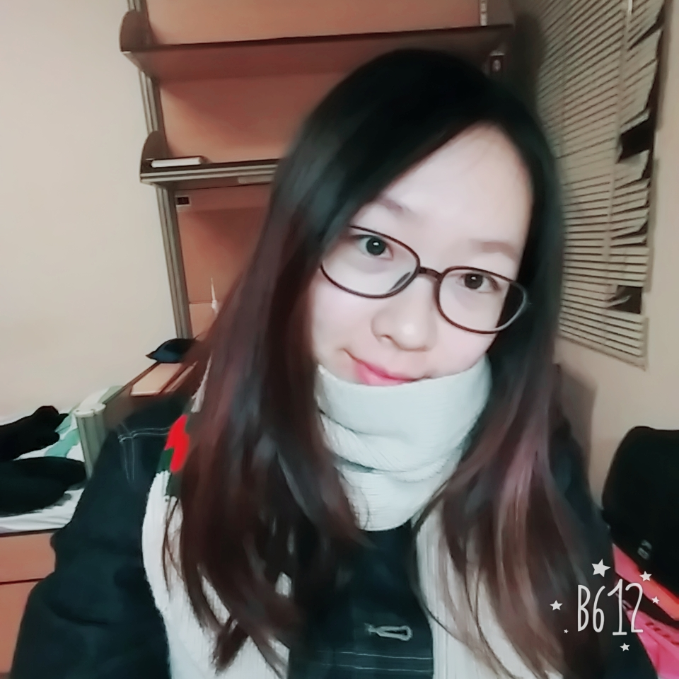

Nie Yuange
+852 94799863 | 17508363@life.hkbu.edu.hk
HONORS/AWARDS• 3rd Prize (No.13-33 of 69 teams), The 7th Social Research Competition held by Sun Yat-sen University, 11/2017 • Minor Award, Outstanding Student Scholarship, year 2, 10/2017 • 2nd Place (53 teams), women’s doubles, The 11th Freshmen Competition of Table Tennis, East Campus, Sun Yat-sen University, 11/2016 • Major Award, Outstanding Student Scholarship, year 1, 10/2016 • China National Scholarship, year 1, 10/2016 EXPERIENCE• Exchange, 2017-2018 Spring Semester, Hong Kong Baptist University, present-05/2018 Taking courses on journalism and communication studies • Volunteer, 2017 Fortune Global Forum, Guangzhou, 12/2017 Working as interpreter of security check • Summer Camp, summer vacation of 2016, Miami University, Ohio, 07/2016-08/2016 Taking courses on American culture and advanced English writing • Journalist, Cuckoonews, campus-based media, Sun Yat-sen University, 09/2016-07/2017 Working on campus and community news, published 4 pieces SKILLS & INTERESTS• Softwares: Premiere (intermediate), Photoshop (introductory), Flash (introductory) • Sports: Basketball team and badminton team of School of Communication and Design • Additional Information: Chinese traditional instrument Zheng, level 9  |